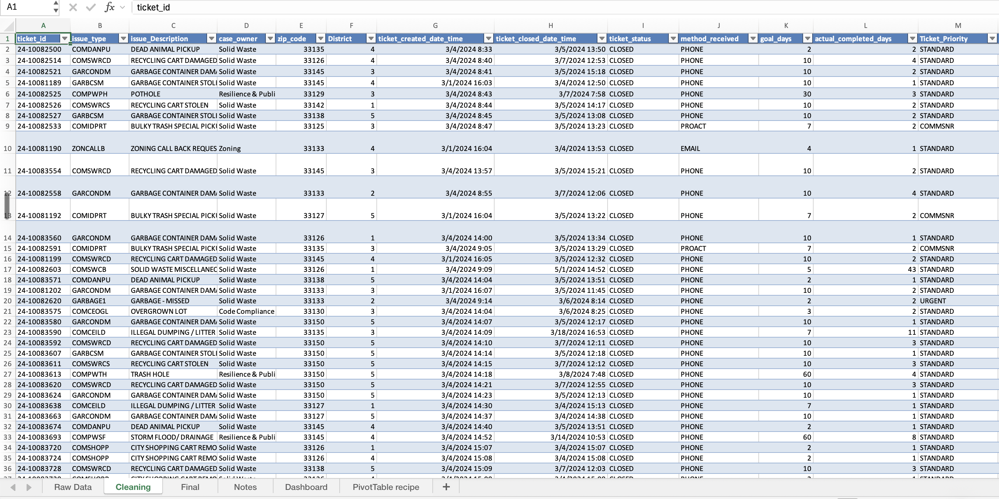
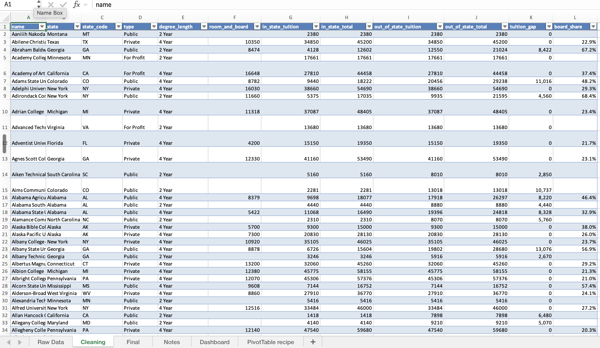
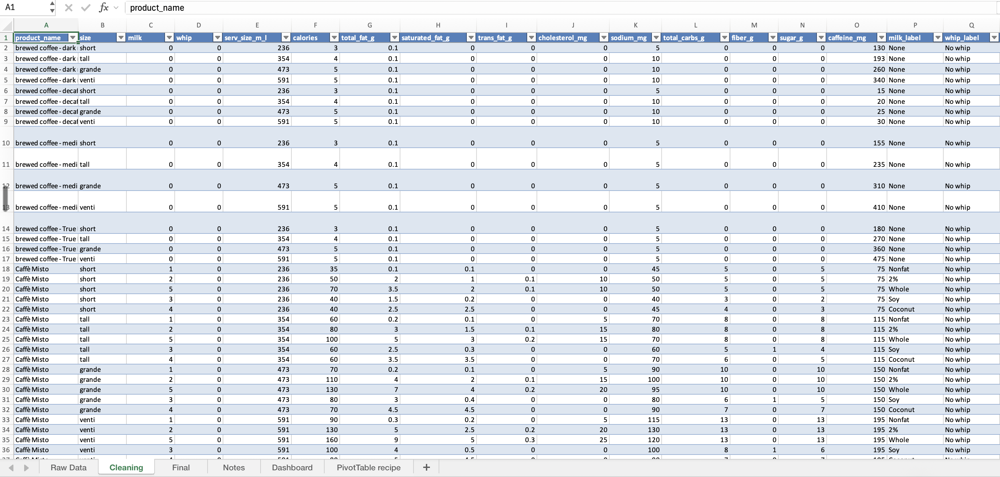

Today: you clean your dataset, finish your question, and make the Final sheet. You work with your partner in the workbook you made in Session 1.
At the end you have four sheets: Raw Data, Cleaning, Final and Notes. Cleaning shows what changed, with numbers before and after.
Before you start
Use Excel for Microsoft 365 on a Windows computer. Open your workbook from OneDrive in the desktop app. If it opens in the browser, click Open in Desktop App.
Open only the boxes for your dataset. The answers in the Check boxes are the same for every pair on your dataset.
Work as a pair, one task at a time. The partner who saved the file types. The other partner reads the steps and checks. Swap for the next task if you like. Working alone? You do both jobs.
Today's work is not graded. The lists on this page help you check your own work. Screenshots are for you: skip them if you are short on time.
Plan: in class, finish Exercises 1 and 2 and the first two tasks of Exercise 3. In the tutoring hour, make Final and finish the Done list.
Stuck? Ask your professor or the tutor.
Save often: Ctrl + S.
How to use this page
Each task tells you the goal and the question. It does not tell you every click. You know these tools.
Read the Nudge first. Still stuck? Open Hint 1 (the tool), then Hint 2 (the key step). The Solution is last. Try first.
GUIDED tasks show the first few clicks. You finish the rest.
Type your answer and click Check. CORE tasks first. EXTRA tasks if you have time.
Your checkmarks save on this computer.
Screenshot boxes: press Windows + Shift + S, drag a box around your work, then click the screenshot box on this page and press Ctrl + V. Your screenshots stay on this computer.
Your answers go in these cells: the summary block on the Cleaning sheet, to the right of the Table, with one empty column between. The helper columns go inside the Table. Your cleaning note goes under the summary block.
Exercise 1 · Sheet: Cleaning · Three skills
Helper column, proof, average
Question: Can you show, with numbers, what your data looked like before and after?
Every dataset uses three skills today: an IF helper column, a COUNTIF that proves a fix, and one math function (AVERAGE). College tuition pairs have one extra task first: NA to blank. The answers are the same for every pair on your dataset.
Make room, then add the helper column names
CORE
In Session 1 you typed three mess-check formulas on the Cleaning sheet. They sit where the summary block goes today. Delete them. Your three problems stay safe in Notes. Then type the first two rows of the summary block. It shows before (Raw Data) next to after (your Cleaning table).
Dataset
Summary block starts in
Before
After
Function
Miami 311 requests
R
S
T
U
College tuition and costs
N
O
P
Q
Starbucks drinks nutrition
T
U
V
W
Then add the helper column names. A helper column is a new column in the Table that a formula fills for every row. Type the names now, so each column sits where it does in the example workbook. The formulas come in the next tasks.
Dataset
Type these names, in this order
Miami 311 requests
description_clean then days_closed_only. Start in O1.
College tuition and costs
tuition_gap then board_share. Start in K1.
Starbucks drinks nutrition
milk_label then whip_label then zero_calorie. Start in P1.
Guided start
Click the Cleaning tab. Select the three Session 1 cells: rows 1 to 3 of the column named under Summary block starts in for your dataset (R, N or T). Press Delete.
In row 1 of that column, type Summary: before and after.
In row 2 type these four headings, one per column: Check, Before (Raw Data), After (Cleaning table), Function. Press Tab between them.
Click the cell right after the last column of the Table, in row 1. Type the first helper name and press Tab. Type the next name. Press Enter after the last one. The Table grows by itself. The cells under the names stay empty for now.
Hint 1
The columns are a few columns to the right of your table. One empty column stays between the table and the block, so the Table does not grow into it.
Hint 2
The Table did not grow? Click inside it, open Table Design, click Resize Table, and include the new columns. Keep the one empty column before the summary block.
Solution
Row 1: the title. Row 2: four headings. Rows 3 to 7 stay empty for now. The helper names sit in row 1 right after the last original column, and the Table Name box still says tblClean. Raw Data and Notes are unchanged.
Your screenshot
The first rows of the summary block with its four headings, and the right end of the Table with the helper names.
Click here, then press Ctrl + V
Saved on this computer only. Show it to your professor or the tutor if you get stuck.
Open if your dataset is College tuition and costs
NA to blank in room_and_board only
CORE
In room_and_board the word NA is text, not an empty cell. Change the NA cells to blank, in that one column only. Warning: Find and Replace also finds na inside other words. If you replace on the whole sheet without ticking the box below, Excel changes 241 school names (Indiana, National and more) and 378 cells in state. Press Ctrl + Z right away if that happens.
Guided start
Click the top edge of the room_and_board header, where the pointer is a black arrow. Only that column's data is selected. Do not select anything else.
Press Ctrl + H. In Find what type NA. Leave Replace with empty.
Click Options. Tick Match entire cell contents. Click Replace All.
Excel shows a message with the number of replacements. It should say 1,094.
Type rows 4 and 5 of the summary block (Before and After for COUNTBLANK and COUNTA), and the extra row 8. Write a line for the NA fix and a line for the warning in the cleaning note task below.
Hint 1
Match entire cell contents means the whole cell must be NA, not just contain those two letters.
Hint 2
Nothing changed? Check that Match entire cell contents is ticked and that room_and_board is still selected. Wrong cells changed? Press Ctrl + Z, check, try again.
Solution
Cell
Type this
N4
Blank cells in room_and_board
O4
=COUNTBLANK('Raw Data'!F2:F2974)
P4
=COUNTBLANK(tblClean[room_and_board])
N5
Cells with something in room_and_board
O5
=COUNTA('Raw Data'!F2:F2974)
P5
=COUNTA(tblClean[room_and_board])
N8
Extra: schools with NA in state
P8
=COUNTIF(tblClean[state],"NA")
Blank: 0 to 1,094. With something: 2,973 to 1,879. The state column keeps its 52 NA (territories). Row 8 is an extra row to prove you did not touch it.
Your screenshot
Cells N3 to P8 and the empty room_and_board cells.
Click here, then press Ctrl + V
Saved on this computer only. Show it to your professor or the tutor if you get stuck.
Open if your dataset is Miami 311 requests
IF helper column
CORE
Only tickets with the status exactly CLOSED should count in the average days. The other tickets (cancelled, open, duplicate and so on) also have a number of days. Write an IF formula in days_closed_only that shows the days for a CLOSED ticket and nothing for the others. Column P.
Guided start
Click P2. Type =IF(, then click the ticket_status cell in row 2. Excel writes [@ticket_status].
Type ="CLOSED", then click the actual_completed_days cell in row 2.
Type ,"") and press Enter. The formula fills the whole column.
Hint 1
IF has three parts: the test, what to show when it is true, what to show when it is false. The false part is two quote marks with nothing between them.
Hint 2
You wrote [@name] or tblClean[[#This Row],[name]]? They mean the same thing.
Write "CLOSED" with no stars. Stars would also match DUPLICATE (CLOSED).
The days_closed_only column with numbers and empty cells.
Click here, then press Ctrl + V
Saved on this computer only. Show it to your professor or the tutor if you get stuck.
Open if your dataset is College tuition and costs
IF helper column
CORE
Room and board as a share of the yearly cost, for each school. A school with no room and board should show nothing, not an error. Write an IF formula in board_share, column L.
Guided start
Click L2. Type =IF(, then click the room_and_board cell in row 2. Excel writes [@room_and_board].
Type ="","", then click room_and_board again, type /, click in_state_total, type ) and press Enter.
Optional: select the column and click % on the Home tab, so it reads like the example.
Hint 1
The test is: is room_and_board empty? If yes, show nothing. If no, divide.
Hint 2
You wrote [@name] or tblClean[[#This Row],[name]]? They mean the same thing.
You see #VALUE!? Some cells in room_and_board still say NA. Finish the NA fix task above first.
Row 2 shows nothing (that school has no room and board). Row 3 shows about 22.9% (10350 divided by 45200).
Your screenshot
The board_share column with percents and empty cells.
Click here, then press Ctrl + V
Saved on this computer only. Show it to your professor or the tutor if you get stuck.
Open if your dataset is Starbucks drinks nutrition
IF helper column
CORE
Some drinks have 0 calories. Flag them without deleting them. Write an IF formula in zero_calorie that shows Yes when calories is 0 and No when it is not. Column R.
Guided start
Click R2. Type =IF(, then click the calories cell in row 2. Excel writes [@calories].
Type =0,"Yes","No") and press Enter. The formula fills the whole column.
Hint 1
IF has three parts: the test, what to show when it is true, what to show when it is false. Words go in quotes. The number 0 does not.
Hint 2
You wrote [@name] or tblClean[[#This Row],[name]]? They mean the same thing.
Solution
=IF([@calories]=0,"Yes","No")
Row 2 (a brewed coffee, 3 calories) shows No.
Your screenshot
The zero_calorie column with Yes and No.
Click here, then press Ctrl + V
Saved on this computer only. Show it to your professor or the tutor if you get stuck.
Open if your dataset is Miami 311 requests
Prove it: COUNTIF and AVERAGE
CORE
A fix is only a fix if you can show it. Add the 2 rows below to the summary block (a label, a Before and an After in each). The Before column counts on Raw Data. The After column counts on your Table, with Table column names. Column R holds the label, S Before, T After, U the function name, in the last column. The Before count is 4,205 and the After count is smaller. COUNT counts numbers only, so it skips the empty cells.
Guided start
Type the label and the Before and After formulas in the rows shown. You can type the formulas exactly as written.
Type the function name in the last column of each row (for example COUNTIF or AVERAGE).
Show two decimals: select the cell. On the Home tab, open the box that says General and choose Number. Excel shows two decimals. The Check rows read the two-decimal number.
Hint 1
COUNTIF counts the cells that match. AVERAGE adds the numbers and divides by how many there are. AVERAGE skips empty cells and text.
Hint 2
Typed a table column name and got an error? Check the spelling of the column name. It must match the header exactly, for example days_closed_only.
Solution
Cell
Type this
R4
Rows that have a number of days
S4
=COUNT('Raw Data'!L2:L4206)
T4
=COUNT(tblClean[days_closed_only])
R7
Average days to close
S7
=AVERAGE('Raw Data'!L2:L4206)
T7
=AVERAGE(tblClean[days_closed_only])
Row labels are in the first column of the block. Label text is yours, but keep it short.
Your screenshot
Cells R1 to T7 with the Before and After numbers.
Click here, then press Ctrl + V
Saved on this computer only. Show it to your professor or the tutor if you get stuck.
Open if your dataset is College tuition and costs
Prove it: COUNTIF and AVERAGE
CORE
A fix is only a fix if you can show it. Add the 2 rows below to the summary block (a label, a Before and an After in each). The Before column counts on Raw Data. The After column counts on your Table, with Table column names. Column N holds the label, O Before, P After, Q the function name, in the last column. This needs the NA fix above. AVERAGE skips text, so Before and After give the same average. That is fine. The count is what shows the fix.
Guided start
Type the label and the Before and After formulas in the rows shown. You can type the formulas exactly as written.
Type the function name in the last column of each row (for example COUNTIF or AVERAGE).
Show two decimals: select the cell. On the Home tab, open the box that says General and choose Number. Excel shows two decimals. The Check rows read the two-decimal number.
Hint 1
COUNTIF counts the cells that match. AVERAGE adds the numbers and divides by how many there are. AVERAGE skips empty cells and text.
Hint 2
Typed a table column name and got an error? Check the spelling of the column name. It must match the header exactly, for example room_and_board.
Solution
Cell
Type this
N3
Cells that say "NA" in room_and_board
O3
=COUNTIF('Raw Data'!F2:F2974,"NA")
P3
=COUNTIF(tblClean[room_and_board],"NA")
N6
Average room_and_board
O6
=AVERAGE('Raw Data'!F2:F2974)
P6
=AVERAGE(tblClean[room_and_board])
Row labels are in the first column of the block. Label text is yours, but keep it short.
Your screenshot
Cells N1 to P6 with the Before and After numbers.
Click here, then press Ctrl + V
Saved on this computer only. Show it to your professor or the tutor if you get stuck.
Open if your dataset is Starbucks drinks nutrition
Prove it: COUNTIF and AVERAGE
CORE
A fix is only a fix if you can show it. Add the 2 rows below to the summary block (a label, a Before and an After in each). The Before column counts on Raw Data. The After column counts on your Table, with Table column names. Column T holds the label, U Before, V After, W the function name, in the last column. Both counts should agree. That is your proof that the IF flag found every 0-calorie drink. Nothing is removed today, so the average stays the same.
Guided start
Type the label and the Before and After formulas in the rows shown. You can type the formulas exactly as written.
Type the function name in the last column of each row (for example COUNTIF or AVERAGE).
Show two decimals: select the cell. On the Home tab, open the box that says General and choose Number. Excel shows two decimals. The Check rows read the two-decimal number.
Hint 1
COUNTIF counts the cells that match. AVERAGE adds the numbers and divides by how many there are. AVERAGE skips empty cells and text.
Hint 2
Typed a table column name and got an error? Check the spelling of the column name. It must match the header exactly, for example zero_calorie.
Solution
Cell
Type this
T5
Rows with 0 calories
U5
=COUNTIF('Raw Data'!F2:F1148,0)
V5
=COUNTIF(tblClean[zero_calorie],"Yes")
T6
Average calories (all rows)
U6
=AVERAGE('Raw Data'!F2:F1148)
V6
=AVERAGE(tblClean[calories])
Row labels are in the first column of the block. Label text is yours, but keep it short.
Your screenshot
Cells T1 to V6 with the Before and After numbers.
Click here, then press Ctrl + V
Saved on this computer only. Show it to your professor or the tutor if you get stuck.
Start your cleaning note
CORE
Your Cleaning sheet needs a note that says what you changed. One line per change. Put it under the summary block: the title in row 9, line 1 in row 10, and one new row for each change you make today. Use the first column of the block (the same column as the labels). Write in your own words.
Dataset
Title goes in
Line 1 goes in
Miami 311 requests
R9
R10
College tuition and costs
N9
N10
Starbucks drinks nutrition
T9
T10
Guided start
Type Cleaning note (one line per change) in the title cell.
In the line 1 cell type: 1. Copied Raw Data to this sheet and made it a Table named tblClean.
Write line 2 for the IF helper column you made. Tuition pairs: write a line for the NA fix too. Pattern: 2. column name: what you did and why.
Hint 1
Each line has a number, a column name, what you did and a number from your summary block when you have one. Short is fine.
Hint 2
Too vague, like cleaned the data, does not help a reader. Say which column, what changed and how many rows.
Solution
Line 1 copied the sheet. Line 2 names your IF helper column and says what it does and why (tuition: plus a line for the NA fix). Exercise 2 adds more lines under these.
Your screenshot
The note under the summary block, with lines 1 and 2.
Click here, then press Ctrl + V
Saved on this computer only. Show it to your professor or the tutor if you get stuck.
Exercise 2 · Sheet: Cleaning · Your dataset
Your dataset's cleaning path
Question: Which problems in your data change an answer, and how do you fix them?
Open only the box for your dataset. Each task ends with a line for your cleaning note. The Check numbers are the same for every pair on your dataset.
Open if your dataset is Miami 311 requests
TRIM the descriptions
CORE
Some request descriptions have two spaces in a row. TRIM removes the extra spaces. Write a helper column description_clean (column O) and prove it with the summary block (row 3).
Guided start
Click O2. Type =TRIM(, click the issue_Description cell in row 2, type ), press Enter.
In the summary block, row 3: label Descriptions with a double space, then the Before and After formulas below.
Add line 3 to your cleaning note.
Hint 1
A double space is two spaces in a row. COUNTIF finds it with a star, two spaces, a star, in quotes.
Hint 2
The Before formula looks at Raw Data. The After formula looks at the new column, not the old one.
Solution
=TRIM([@issue_Description])
Cell
Type this
S3
=COUNTIF('Raw Data'!C2:C4206,"* *")
T3
=COUNTIF(tblClean[description_clean],"* *")
The text between the quote marks is a star, two spaces, a star.
Note line example: 3. description_clean: TRIM removes the extra spaces (9 descriptions had a double space, now 0).
Your screenshot
Cells R3 to T3 and the description_clean column.
Click here, then press Ctrl + V
Saved on this computer only. Show it to your professor or the tutor if you get stuck.
Exact CLOSED, not stars
CORE
Count the tickets that are exactly CLOSED. Then count again with stars around the word, and see the trap. Use rows 5 and 6 of the summary block. Leave the Before cells as n/a.
Guided start
Row 5: label Rows with status exactly "CLOSED". In the After cell use COUNTIF on ticket_status with "CLOSED".
Row 6: label Trap: "*CLOSED*" also counts DUPLICATE (CLOSED). In the After cell use the same formula with stars around CLOSED.
Compare the two numbers. Click the filter arrow on ticket_status to see which extra status the stars catch. Clear the filter after.
Add line 4 to your cleaning note.
Hint 1
Stars mean any text before or after. So the stars version also counts every status that contains the word CLOSED.
Hint 2
The exact version and the days_closed_only count from Exercise 1 agree. If they do not, check that you wrote CLOSED with no stars in the helper.
Solution
Cell
Type this
T5
=COUNTIF(tblClean[ticket_status],"CLOSED")
T6
=COUNTIF(tblClean[ticket_status],"*CLOSED*")
Exact: 4,094. With stars: 4,136. The extra 42 are DUPLICATE (CLOSED) tickets.
Your screenshot
Cells R5 to T6.
Click here, then press Ctrl + V
Saved on this computer only. Show it to your professor or the tutor if you get stuck.
Leave two things alone and say so
CORE
Not every odd thing is a mistake. District 0 and the blank closed dates are left as they are. Say so in your note, so a reader knows you saw them. Type a quick COUNTIF on District in any empty cell under the note, read it, then delete the cell.
Guided start
In an empty cell type =COUNTIF(, click the top edge of the District header, type ,0), press Enter. Read the number, then delete the cell.
Add line 5 to your cleaning note: left alone on purpose, with the two numbers (24 blank closed dates, and the District 0 count).
Add one line for any other change you made.
Hint 1
A note that says what you left alone shows you looked. District 0 is a value in the data, not a blank.
Hint 2
If the cell shows an error, check the column name and the comma before the 0.
Solution
District 0 count: 15. Note line example: 5. Left alone on purpose: 24 blank closed dates and District 0 (15 rows).
Your screenshot
Your cleaning note with the left-alone line.
Click here, then press Ctrl + V
Saved on this computer only. Show it to your professor or the tutor if you get stuck.
Open if your dataset is College tuition and costs
The Out minus In helper
CORE
How much more does an out-of-state student pay in tuition? Write a helper column tuition_gap (column K). Then average it in the summary block, row 7. Do not use PROPER or other case changes on the names. They are fine as they are.
Guided start
Click K2. Type =, click the out_of_state_tuition cell in row 2, type -, click the in_state_tuition cell, press Enter.
Row 7: label Average gap, out-of-state minus in-state tuition, Before n/a, After an AVERAGE of tuition_gap.
Add the next line to your cleaning note. Format the average with two decimals.
Hint 1
Out of state minus in state. A school that charges the same price to everyone shows 0.
Hint 2
The gap column has numbers in every row, no empty cells.
Solution
=[@out_of_state_tuition]-[@in_state_tuition]
P7: =AVERAGE(tblClean[tuition_gap])
Your screenshot
The tuition_gap column and cell P7.
Click here, then press Ctrl + V
Saved on this computer only. Show it to your professor or the tutor if you get stuck.
Leave two things alone and say so
CORE
52 schools have NA in state (DC, Puerto Rico and other territories). 1 school has the type Other. Do not change them. Say so in your cleaning note.
Guided start
Add a line to your cleaning note: left alone on purpose, with the two numbers.
Check that board_share shows numbers for the schools with room and board. It counts 1,879 of them.
Hint 1
A note that says what you left alone shows you looked.
Hint 2
If board_share still shows errors, a cell in room_and_board still says NA. Go back to the NA fix.
Solution
Note line example: Left alone on purpose: 52 schools with NA in state (DC, Puerto Rico and other territories) and 1 school with type Other.
Your screenshot
Your cleaning note with the left-alone line.
Click here, then press Ctrl + V
Saved on this computer only. Show it to your professor or the tutor if you get stuck.
Open if your dataset is Starbucks drinks nutrition
Milk code to words
CORE
The milk column is a code: 0 None, 1 Nonfat, 2 2%, 3 Soy, 4 Coconut, 5 Whole. Turn it into words in milk_label (column P) with CHOOSE. No lookup function is needed. Watch out: if you type 2% into a cell, Excel makes it the number 0.02. The word comes from the formula, with quotes around it, so it stays text.
Guided start
Click P2. Type =CHOOSE(, click the milk cell in row 2, type +1,.
Type the six words in quotes, separated by commas, in code order: "None","Nonfat","2%","Soy","Coconut","Whole"). Press Enter.
Summary block row 3: the None count. Row 8: Nonfat (an extra row to prove the other codes). Add line 3 to your cleaning note.
Hint 1
CHOOSE picks item number 1, 2, 3 and so on from the list. Code 0 needs item 1, so add 1 to the code.
Hint 2
Rather use IF? Nest it: =IF([@milk]=0,"None",IF([@milk]=1,"Nonfat",...)). It gives the same words, but it is longer. Either way is fine.
None: 165 to 165. Nonfat: 222 to 222. The Before and After numbers match: no row lost its milk.
Your screenshot
The milk_label column and cells T3 to V8.
Click here, then press Ctrl + V
Saved on this computer only. Show it to your professor or the tutor if you get stuck.
Whip to words
CORE
The whip column is 0 or 1. Turn it into words in whip_label (column Q): 1 is Whip, 0 is No whip. Prove it in row 4 of the summary block.
Guided start
Click Q2. Type =IF(, click the whip cell in row 2, then =1,"Whip","No whip"). Press Enter.
Row 4: label Whip code 1 / the word Whip. COUNTIF on Raw Data for the number 1. COUNTIF on whip_label for the word Whip.
Add line 4 to your cleaning note.
Hint 1
The test is whip equals 1. True shows Whip. False shows No whip.
Hint 2
Both counts should agree. If they do not, check the spelling of Whip in the formula and in the COUNTIF.
Solution
=IF([@whip]=1,"Whip","No whip")
Cell
Type this
U4
=COUNTIF('Raw Data'!D2:D1148,1)
V4
=COUNTIF(tblClean[whip_label],"Whip")
Your screenshot
The whip_label column and cells T4 to V4.
Click here, then press Ctrl + V
Saved on this computer only. Show it to your professor or the tutor if you get stuck.
Zero calories: flag, keep, say so
CORE
40 drinks have 0 calories (for example brewed teas). You flagged them in zero_calorie. Keep them in, and say so in your note. 4 product names have a double space. Leave them alone too, because your question does not need them.
Guided start
Add a line to your cleaning note: the zero-calorie rows are flagged and kept, with the number.
Add a line for the product names you left alone.
Stretch: row 7, label Stretch: average calories without the 0-calorie rows. Leave the Before cell as n/a. Use AVERAGEIF on zero_calorie equal to "No".
Hint 1
A flag keeps the rows. A filter later can hide them. You decide when you build PivotTables.
Hint 2
AVERAGEIF needs three parts: the column to test, what to test for, the column to average.
Saved on this computer only. Show it to your professor or the tutor if you get stuck.
Exercise 3 · Sheets: Notes, Cleaning, Final
Finish the question, make Final
Question: Does Final hold everything your question needs, as values only?
Final is what the PivotTables read. Get the question and the columns right first, then make it.
Finish your question
CORE
Your central question from Session 1 goes in Notes B3. Make it final today. One sentence, plain English, ends with a question mark. It says what you will compare or measure in your dataset. Later it goes at the top of your Dashboard.
Guided start
Open the Notes sheet. Read B3. Is it one sentence? Does it say what to compare?
Fix it if needed. Keep it short.
In A4 type Columns needed. In B4 write the column names your question needs, separated by commas.
Hint 1
A good question names a group and a measure: who or what, compared by which number.
Hint 2
Too big, like everything about the data, or a yes or no question, does not work with PivotTables. Pick one group and one number.
Solution
B3 holds one question sentence. A4 says Columns needed and B4 lists the columns.
Your screenshot
The Notes sheet with the final question in B3 and the columns it needs in B4.
Click here, then press Ctrl + V
Saved on this computer only. Show it to your professor or the tutor if you get stuck.
Check the columns, add a helper now
CORE
Look at the columns your question needs. Are they all in the Cleaning Table? If not, add a helper column now. After you make Final you cannot add one without making Final again. Use the same skills as today: an IF formula for groups or words, or a plain formula like [@b]-[@a] for a calculation.
Guided start
Go through the column names in Notes B4. Click each name in the Table header row.
Missing a column or a group? Click the last Table header, right-click, choose Insert, then Table Columns to the Right. Type the new name. Write the formula in row 2; it fills down. The summary block moves one column to the right. That is fine.
Add a line to your cleaning note for the new column.
Hint 1
Ask: could I make a PivotTable with the question's group in rows and its number in values? If a word or a calculation is missing, it is a helper column.
Hint 2
If your question is already covered by today's helper columns, you are done with this task. Write that in your note.
Solution
Every column in Notes B4 is a column header in the Table, with no errors in it. Any new helper has a line in the cleaning note.
Your screenshot
The right end of the Table with any new helper column.
Click here, then press Ctrl + V
Saved on this computer only. Show it to your professor or the tutor if you get stuck.
Make the Final sheet
CORE
Final is the cleaned data as values only. PivotTables read it in the next sessions. You copy Cleaning, delete the extras, and paste values so no formulas are left. The partner who did not type last time types this one. The other partner checks. One thing to know: helper cells that showed nothing ("") become empty text in Final. Use Average in a PivotTable, because it skips them.
Guided start
Right-click the Cleaning tab. Choose Move or Copy. Tick Create a copy. Under Before sheet choose Notes, so Final sits before Notes. Click OK. Rename the copy Final.
On Final, delete everything right of the Table: the empty column, the summary block and the note. Click the first column letter after the Table, hold Shift, click the last used column letter, right-click, Delete. Miami 311: Q to U. Tuition: M to Q. Starbucks: S to W. One letter further right for each helper column you added in the previous task.
Click one cell in the Table. Press Ctrl + A to select the data. Press Ctrl + C.
Do not click elsewhere. On the Home tab open the Paste arrow and choose Paste Values (the clipboard with 123). Press Esc.
Click a helper cell. The formula bar shows a number or a word, not a formula. Click two more.
Hint 1
Cleaning keeps its formulas. Only the copy, Final, holds values. Your row count and column names stay the same.
Hint 2
Still see a formula in the formula bar? Paste Values did not happen. Select the data again, copy, and use the Paste arrow, not Ctrl + V.
Solution
Four tabs: Raw Data, Cleaning, Final, Notes. Final has one header row, the same number of rows as Cleaning, and no formulas.
Your screenshot
The Final sheet with a helper cell selected and a value (not a formula) in the formula bar.
Click here, then press Ctrl + V
Saved on this computer only. Show it to your professor or the tutor if you get stuck.
Done today when...
Answer each line with Yes or No. Fix every No before you leave. If you run out of time, tell your professor or the tutor which line is a No.
0 of 8 Yes
What done looks like: Miami 311 requests

Screenshot coming
This picture shows the left side of the Cleaning sheet. Your helper columns are further to the right, in O and P. The summary block and the note are also further right and are not in the picture. Your window may look a little different on Windows. The example workbook also has Dashboard and PivotTable recipe tabs. You make your own PivotTable and Dashboard tabs in later sessions.
Tabs: Raw Data, Cleaning, Final, Notes.
Cleaning Table, 16 columns, ending in description_clean and days_closed_only. The status bar Count for column A is 4,205.
Summary block: rows that have a number of days 4,205 to 4,094; average days to close 13.16 to 5.87; descriptions with a double space 9 to 0; status exactly CLOSED 4,094, with stars 4,136.
Cleaning note: copied the sheet, the two helper columns, the exact CLOSED count, and what was left alone.
Final: 4,205 rows, 16 columns (plus any helper you added), values only, no summary block and no note.
What done looks like: College tuition and costs

Screenshot coming
This picture shows the whole Table. The summary block and the note are to the right of it and are not in the picture. Yours may show no comma in tuition_gap. Your window may look a little different on Windows. The example workbook also has Dashboard and PivotTable recipe tabs. You make your own PivotTable and Dashboard tabs in later sessions.
Tabs: Raw Data, Cleaning, Final, Notes.
Cleaning Table, 12 columns, ending in tuition_gap and board_share. The status bar Count for column A is 2,973.
Summary block: NA in room_and_board 1,094 to 0; blank cells 0 to 1,094; cells with something 2,973 to 1,879; average room_and_board 10095.28; average gap 4041.43.
Cleaning note: copied the sheet, the NA fix (with the warning), the two helper columns, and what was left alone.
Final: 2,973 rows, 12 columns (plus any helper you added), values only, no summary block and no note.
What done looks like: Starbucks drinks nutrition

Screenshot coming
This picture shows the left side of the Cleaning sheet. Your third helper column, zero_calorie, is in R, further to the right. The summary block and the note are further right still and are not in the picture. Your window may look a little different on Windows. The example workbook also has Dashboard and PivotTable recipe tabs. You make your own PivotTable and Dashboard tabs in later sessions.
Tabs: Raw Data, Cleaning, Final, Notes.
Cleaning Table, 18 columns, ending in milk_label, whip_label and zero_calorie. The status bar Count for column A is 1,147.
Summary block: milk None 165 to 165; whip 283 to 283; 0 calories 40 to 40; average calories 228.39; stretch average without the 0-calorie rows 236.65.
Cleaning note: copied the sheet, the three helper columns, the zero-calorie decision, and what was left alone.
Final: 1,147 rows, 18 columns (plus any helper you added), values only, no summary block and no note.
Where today shows up in your grade
Today itself is not graded. Your finished workbook is. Today you build these parts of it:
A function that cleans or explores, used in the Table (IF, TRIM, CHOOSE, COUNTIF): 4 points.
A math function used in the sheet (AVERAGE): 4 points.
Real problems found and fixed, and Final shows the fix: 4 points.
A short cleaning note, one line per change: 2 points.
Final made with Paste Values, no formulas: 3 points.
Final has one header row, no blank rows, no blank columns, a name on every column: 2 points.
The columns your question needs are in Final: 4 points.